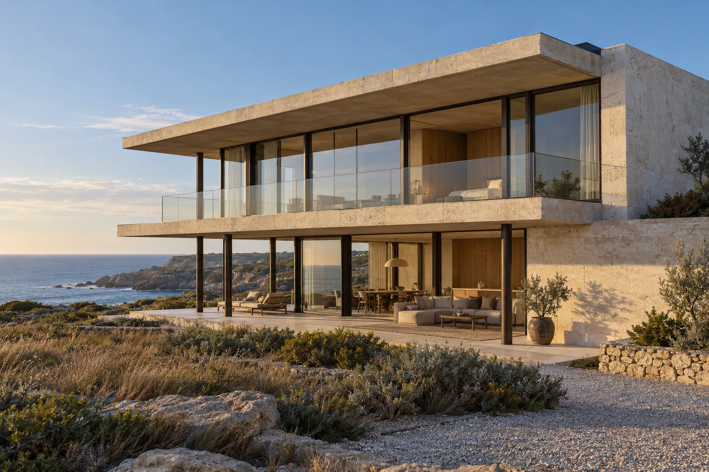
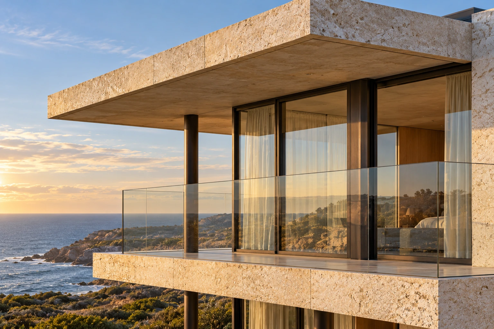
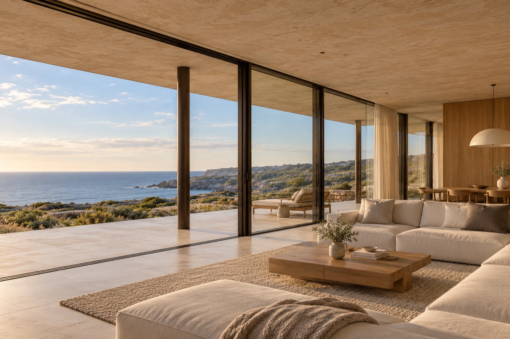

Stone House, Atlantic coast
Space.
Held in light.
Limestone, glass and a quiet horizon.
A house shaped by what surrounds it.

The whole houseStone House, 318 m²

Stone, bronze, glass
The space
between.
Deep stone planes shelter the rooms. Slender columns carry their weight. Glass keeps the horizon close.
- Structure
- Limestone and concrete
- Frames
- Dark bronze
- Setting
- Atlantic coast
Come
inside.
Warm oak, soft linen and a garden beyond the glass. An open living room that gives the landscape room to breathe.

Living, open to the landscape.Materials in their own light.
A place for the everyday
Space to
be still.
An imagined residence for slow mornings, long shadows and the everyday pleasure of being somewhere considered.
An independent architectural concept. No property is offered for sale.